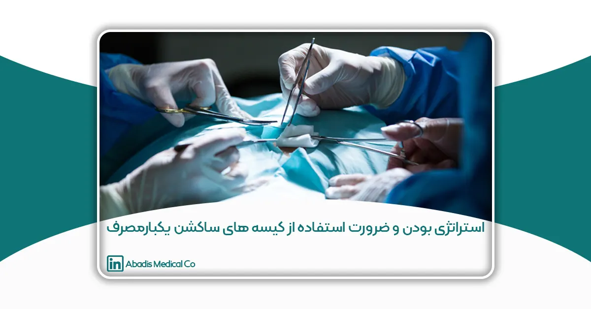

مقدمه
کنترل عفونت بیمارستانی مسئله بسیار مهمی است که همیشه مورد توجه افرادی که مسئولیت مراقبت از بیماران را بر عهده دارند بوده است؛این مشکل علاوه بر افزایش میزان مرگ و میر، منجر به افزایش هزینه های درمان نیز می گردد.
برآوردی از میزان هزینه ناشی از عفونت بیمارستانی در سال ۱۹۹۵ در آمریکا در حدود ۵.۴ میلیارد دلار بوده است.
با افزایش پیچیدگی مراقبت های پزشکی و افزایش تعداد بیماران حساسیت به عفونتها نیز بیشتر شده و در نتیجه رعایت اصول خاص جهت کنترل عفونت ها و همچنین تحقیق و بررسی علل آن بیش از پیش احساس می گردد.
تعریف عفونت بیمارستانی
عفونت بیمارستانی به عفونتی گفته میشود که افراد بستری در مدت زمانی که در بیمارستان اقامت دارند به آن مبتلا میشوند.
به طور معمول، عفونتهایی که بعد از ۴۸ تا ۷۲ ساعت تظاهر میکنند، بعنوان عفونتهای بیمارستانی قلمداد میشوند و اگر در مدت کمتر از ۴۸ ساعت بعد از بستری شدن بیمار عفونتی اتفاق بیفتد.
از سال ۱۹۸۴ بحث احتیاط استاندارد (Standard precautin) مطرح شد که به طور کلی همهی مایعات و ترشحات بدن را اعم از اینکه حاوی خون باشند یا خیر عفونی تلقی میکند و احتیاط عمومی را در خصوص آنها به کار میبرد.
افراد مبتلا به عفونت بیمارستانی
در کل سه گروه از افراد در معرض خطر ابتلا به عفونت های بیمارستانی میباشند:
– بیماران
– پرسنل کادر درمانی
– افرد جامعه
– استاندارد های حفاظت از کارکنان بیمارستانی
پیشگیری از عفونتهای بیمارستانی با تشکیل کمیته کنترل عفونت
سازمان بهداشت جهانی، مقرراتی را تحت عنوان Universal Precautins یا احتیاطات عمومی وضع کرد و اجرای آن را به تمام کارکنان مراکز پزشکی به طور اعم توصیه نموده است.
این اصول که برای اولین بار به وسیله مرکز کنترل بیماریها در ایلات متحده (CDC) در سال ۱۹۸۷ میلادی تدوین گردید.
خیلی زود جنبه جهانی به خود گرفت و سازمان بهداشت جهانی و بسیاری از سازمانهای بهداشتی کشورهای بزرگ بر آن صحه گذاشتند.
به طوری که امروزه یکی از مسائل روزمره سازمانهای بهداشتی جهان شده است.
در کشور ما نیز از سال ۱۳۶۹ این اصول مطرح و کتب چندی درباره آن نوشته شده است و همچنین در بسیاری از سازمانهای بیمارستانی «کمیته های کنترل عفونت» به صورت رسمی تشکیل شده است.
انتقال عفونت در بیمارستان
وضعیت کنترل عفونت بیمارستانی در ایران
نتایج تحقیقات نشان میدهد وضعیت ایران درخصوص کنترل عفونتهای بیمارستانی در شرایط بدی قرار دارد.
متأسفانه در این زمینه به آمارهای دقیقی در کشور دسترسی نداریم، اما براساس آمارهای بینالمللی، سالانه بیش از ۲میلیون نفر در جهان دچار عفونتهای بیمارستانی میشوند.
البته شیوع عفونتهای بیمارستانی گریبانگیر اکثر کشورهاست و تنها مختص ایران نیست.
براساس آمارهای جهانی در سال، ۱۷ تا ۲۹ میلیارد دلار هزینه صرف درمان عفونتهای بیمارستانی میشود، درحالی که میتوان با سرمایهگذاری مناسب در زمینه کنترل عفونتهای بیمارستانی در هزینههای درمانی صرفه جویی کرد.
پیشگیری و کنترل عفونت های بیمارستانی
در اینجا سه راهکار اصلی وجود دارد:
الف: حذف مخازن ارگانیسم ها یا محدود نمودن آنها
ب: قطع زنجیره انتقال
ج: محافظت میزبان در برابر عفونت و بیماری
نتیجه گیری اولیه
بنابراین رعایت اصول بهداشتی و استریلیزاسیون و ارایه راهکارهای نوین جهت کاهش و کنترل عفونت بیمارستانی توسط پزشکان پرستاران و کارکنان بیمارستانی در بخش های مختلف بخصوص بخشهایی که امکان عفونت در آنها بالاست مثل اتاق های عمل ICU / CCU NICU / و … که شرایط خاص دارند و بیمارانی با شرایط ویژه و ضعف سیستم ایمنی در آنها بستری می باشند بسیار حایز اهمیت است.
آیا می دانید که؟
۸۰ درصد عفونتهای بیمارستانی قابل پیشگیری است؟
۱۲ درصد بیماری های عفونی از بیمارستان ها نشات می گیرد؟
بیشترین عفونت بیمارستانها در بخش آیسییو گزارش شده است؟
سالانه ۱۹ هزارنفر در دنیا براثر عفونتهای بیمارستانی بهکام مرگ میروند؟
گسترش عفونتهای بیمارستانی اشغال تختها را افزایش داده است؟
عفونتهای بیمارستانی عامل یک سوم مرگ و میر در بیمارستانهاست؟
۲۴٪ کل عفونت های بیمارستانی مربوط به بخش جراحی میشود؟
کیسه هاى یکبار مصرف ساکشن
بعد از شرح مسئله کنترل عفونتهاى بیمارستانى، کیسههاى یکبار مصرف دفع بهداشتى ساکشن را که در این مقوله بسیار موثرند معرفى و ویژگیهاى مختلف آنها را بیان میکنیم.
در کشور آمریکا ۸۰ ٪ مراکز درمانى از کیسههاى یکبار مصرف بهره مىگیرند.
در برخى از مراکز درمانى که هنوز از ظروف قابل شستشو استفاده مىشود دستورالعمل رایج این است که هر ۲۴ ساعت این ظروف شسته شوند، ولى متاسفانه این دستورالعمل به دلیل دشوارى آن براى کارکنان خدماتى بطور صحیح انجام نمىگیرد .
بهره گیرى از تجهیزات مناسب نظیر کیسههاى یکبار مصرف دفع ساکشن میتواند تا ۱۰۰۰ دلار در سال به ازاى هر تخت مراقبت ویژه صرفهجویى در هزینههاى درمانى به همراه آورد.
کیسههاى یکبار مصرف ساکشن روشى موثر در کاهش خطر انتشار عفونت از طریق تماس کارکنان بخشهاى مختلف درمانى با ضایعات عفونى و ترشحات ارگانیک است.
شتوشو معمولا مایعات ساکشن شده در چاه فاضلاب بیمارستان تخلیه مىشوند که به دلیل امکان انتقال عفونت به محیط زیست و آبهاى زیرزمینى به هیچ وجه قابل پذیرش نیست، تصفیه فاضلاب نیز بسیار پرهزینه است.
استفاده از کیسههاى ساکشن یکبارمصرف همچنین باعث کاهش هزینهها شامل:
– مواد ضدعفونىکننده
– آب
– برق
– و هزینههاى کارکنان خدماتى است
آنالیز مصرف آب و مواد ضدعفونی کننده بعد از تجهیز یک بخش به کیسه های ساکشن یکبارمصرف در یکی از بیمارستان های تهران در اسفند ماه ۹۶
در این بیمارستان معمولا پس از شستشو با آب کنیسترها را در مخازن ۲۰ لیتری که حاوی مخلوط آب و ماده ضد عفونی کننده میباشد غوطه ور میکنند. معمولا از ماده دکونکس ۲٪ استفاده می شود، در نتیجه برای یک مخزن ۲۰ لیتری آب و دکونکس نیاز به ۴۰۰ سی سی دکونکس میباشد. به طور متوسط در این مخازن ۸ کنیستر ۱ لیتری جای میگیرد.یعنی برای ۸ لیتر مخزن ساکشن ۴۰۰ سی سی دکونکس مصرف می گردد و در نتیجه برای شست و شوی مخازن سنتی برای مصرف تنها یک بخش از یک بیمارستان برای مصرف تنها ۳ ماه نیاز به۲۵۸ لیتر دکونکس میباشد. اگر هر لیتر دکونکس را ۱۹۲٫۰۰۰ تومان فرض کنیم به رقم ۴۹٫۵۳۶٫۰۰۰ تومان میرسیم.
به این موارد می توان به کاهش مصرف دستکش، گان و ماسک نیز اشاره کرد.
مصرف آب برای شست و شوی هر لیتر مخزن سنتی : بین ۴ تا ۶ لیتر (به طور تخمینی ۵ لیتر در نظر میگیریم)
در نتیجه برای شست و شوی مخازن سنتی برای مصرف تنها یک بخش از یک بیمارستان برای مصرف تنها ۳ ماه معادل ۲۵۸۵۰ لیتر آب مصرف می گردد.
برای شست و شوی مخازن سنتی برای مصرف تنها یک بخش از یک بیمارستان برای مصرف تنها ۳ ماه معادل ۲۵۸۵۰ لیتر آب مصرف می گردد.
اگر کل بخش های بیمارستانی و کل کشور را در نظرگرفت با توجه به بحران آب و خشکسالی ، آیا به این نتیجه نباید رسید استفاده از کیسه های ساکشن یک بار مصرف یک محصول استراتژی و ضروری است؟